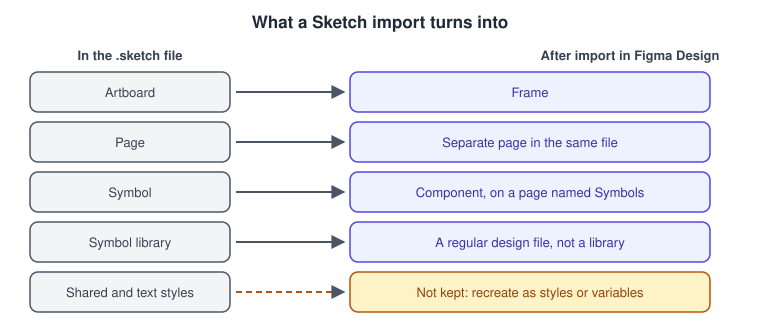
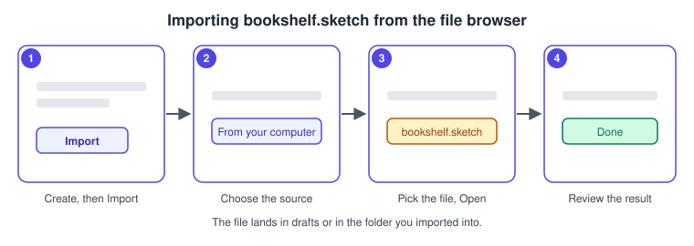
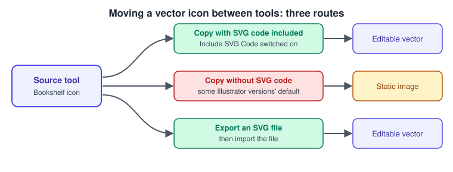
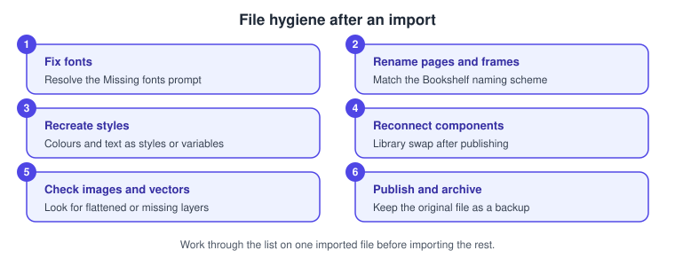

Importing and Migrating
|
This content was generated with the assistance of AI and should be verified against the official documentation before being relied on in production. |
This page was written on 2026-10-30 against the UI3 interface. Importing is a feature of the file browser and of the editors rather than a product of its own. The help articles describe importing as available on all plans: anyone can import into their own drafts, while importing into a folder needs edit access to that folder and, on the Organization and Enterprise plans, a paid seat on top of it. Tier names only are used here; the seat model (Full, Dev, Collab and View) is explained on Plans, Seats and AI Credits. None of the routes below is labelled beta in the articles cited, but check each article before relying on it for a large migration.
The running example is the Bookshelf team moving its old design work into Figma: a Sketch file with the catalogue screens, an icon set drawn in Illustrator, a research board from a whiteboard tool and a stakeholder deck in PowerPoint. For where each product fits see Introduction and Product Family.
Choosing a migration path
Pick the route by the kind of source. Official routes exist for Sketch files, PowerPoint decks and several whiteboard tools. For everything else the help centre recommends moving content as SVG.
Where importing lives in UI3
-
File browser: click Create new, then Import, then choose Import from computer, pick the files and click Done. You can also drag files from your computer into the file browser. Files land in your drafts, or in the folder you imported into. The browser import accepts, among others, Sketch (.sketch), Figma Design (.fig), FigJam, Slides and PowerPoint (.pptx) files and PNG and JPG images; static images, GIFs and video are added inside a Design file instead.
-
Inside Figma Design: open the Main menu, choose File, then New from Sketch file.
-
On the canvas: right-click and choose Paste here to place SVG content copied from another tool.
Import time depends on file size, and the help articles warn that very large files may fail, in which case you split the source into smaller files first. The articles list no keyboard shortcut for importing.
| Source | Entry point | Result | Check afterwards |
|---|---|---|---|
Sketch file |
Create new, Import, or File, New from Sketch file |
Figma Design file; later edits in Sketch do not sync |
Fonts, styles, component instances |
Illustrator artwork |
Copy and paste, or export an SVG and import it |
Editable vectors when SVG code is included, otherwise a static image |
Clipboard preference, stroke and fill details |
Whiteboard boards |
FigJam import, per tool |
FigJam objects (shapes, connectors, text, images) |
Items that do not carry over |
PowerPoint deck |
Create new, Import, in Slides |
Editable Slides deck |
Fonts, videos, tables, diagrams, animations |
Adobe XD file |
No official importer |
Assets as SVG, or a rebuild |
Everything, as it is manual work |
Importing Sketch files
Importing converts the .sketch file into a Figma Design file. The conversion is one-way: edits you make later in Sketch are not reflected in Figma, so treat the import as a hand-over date. Beta builds of Sketch can import inconsistently, so save the file with the latest stable Sketch version first. To bring over only a few assets, copy and paste them into a Design file instead.

Source: Figma Learn: Import Sketch files
What the help article documents about the conversion:
-
Artboards become frames. Each Sketch page becomes a separate page in the same Figma file, reachable from the layers panel.
-
Symbols become components, and the Symbols page becomes a page named Symbols that holds the main components.
-
A symbol library is imported as a regular design file, not as a library. Publishing it as a library needs a paid plan, and instances in the imported file then need reconnecting to the main components by swapping them one by one or by running a library swap. See Libraries and Publishing and Components and Instances.
-
Styles are not retained; recreate them in Figma as styles or, for colour, spacing and theming, as variables. See Styles and Variables, Collections and Modes.
-
Text that uses local fonts keeps them if the fonts are available. The desktop app uses local fonts by default; in the browser you need the Figma font installer; ChromeOS and Linux do not support local fonts. A Missing fonts prompt asks you to update the affected text layers. See Text and Typography.
Procedure: import the Bookshelf Sketch file
-
In the file browser open the team folder that will hold the project, or stay in your drafts.
-
Click Create new, then Import.
-
Choose Import from computer, select
bookshelf-catalogue.sketchand click Open. -
Wait for the upload to finish, then click Done.
-
Open the new file and find the Symbols page for the components and one page per Sketch page.
-
Resolve the Missing fonts prompt, then recreate the colour and text styles.

Source: Figma Learn: Import Sketch files
Procedure: create a file from Sketch while editing
-
In an open Figma Design file, open the Main menu.
-
Choose File, then New from Sketch file.
-
Select the .sketch file and click Open.
Source: Figma Learn: Import Sketch files
Copying from Illustrator and other vector tools
The help centre recommends SVG as the exchange format between design tools because it is lossless. To place content, copy it from the source tool as SVG, then in a Design file where you have edit access right-click the canvas and choose Paste here. SVG marker and pattern elements do not carry over. To go the other way, select the object in Figma, right-click, open Copy/Paste as and choose Copy as SVG; with view access only, the owner must allow copying first.
For Illustrator specifically, the help article reports that from version 29.7.1 Illustrator no longer includes SVG code by default when you copy vectors, so they paste into Figma as static images. The fix it gives is to turn on Include SVG Code in the clipboard handling settings of the Illustrator preferences. It also reports a bug in 29.8.1 that blocks pasting vectors, with the workaround of exporting an SVG file and importing that. These version details are a snapshot of the article on 2026-10-30; check Adobe’s documentation for the current location of the preference.

Procedure: bring the Bookshelf icon set over
-
In Illustrator, open the preferences and confirm Include SVG Code is on in the clipboard handling settings.
-
Select the icon artwork and copy it.
-
In Figma Design open the icon page, right-click the canvas and choose Paste here.
-
If the result is a flat image, export the artwork from Illustrator as an SVG file and import that file instead.
-
Select the pasted vectors and check strokes and fills. See Shapes, Vectors and the Pen Tool.
Importing into FigJam
FigJam accepts images (PNG, JPG, GIF, TIFF and WEBP), video (MP4, MOV and WebM), PDFs, text and spreadsheet data; a GIF imports but does not animate. Import and export is described as available on any team or plan, and anyone with can edit access to the FigJam file can import. You can also paste layers copied from a Design file, though FigJam has no layers panel, which limits what you can select inside pasted frames and components.
Boards from other whiteboard tools can be imported: the help centre has separate guides for Miro, Mural, Lucid and Google Jamboard. For Mural the article describes exporting the board as a PDF and importing it into FigJam with Mural chosen as the source; sticky notes become shapes with text, comments, voting and uploaded files do not carry over, and italic text imports as regular text. There is also an official migration guide for moving a whole organisation from Miro, Mural or Lucid; it frames the work as discovering and inventorying boards, archiving most, importing the priority ones and training users, and does not state plan or seat requirements. See FigJam.
Procedure: import the Bookshelf research board
-
Export the board from the old tool in the format its guide asks for (for Mural, a PDF).
-
In the file browser click Create new, then Import, and choose Import from computer.
-
Select the exported file and set the source tool when asked.
-
Open the new FigJam file and check stickies, connectors and text.
-
Rebuild anything that did not carry over, such as votes, then regroup the stickies into the affinity clusters.
Source: Figma Learn: Migrate to FigJam
Importing PowerPoint into Slides
The file browser imports .pptx files into a Slides deck, available on all plans; importing into a team needs edit access to it. After import you can edit slides and add slides and presenter notes. The article lists what to review: all text switches to Inter, videos, tables, diagrams and animations are not imported, and some objects may change or disappear. Re-add videos through the media picker, rebuild tables and diagrams or insert them as images, and recreate animations with slide transitions or object animations. The import steps and the export direction are covered on Figma Slides.
Procedure: import the stakeholder deck
-
In the file browser click Create new, then Import, and choose Import from computer.
-
Select
bookshelf-rationale.pptxand wait for the upload. -
Open the deck in grid view and look for missing or changed objects.
-
Change the font from Inter if the brand requires another.
-
Rebuild the tables and diagrams and re-add the videos and transitions.
Moving from Adobe XD
No official Adobe XD importer in the Figma help centre was found on 2026-10-30. The guide to imports names .fig and .sketch as the design-file formats you can import and does not mention XD, so this is an absence of documentation rather than a documented statement that none exists. Adobe XD itself is reported to be in maintenance mode; verify its current status with Adobe, as this page cannot confirm it from Figma sources.
The routes below are techniques rather than documented Figma features:
-
Export the artwork from XD as SVG and place it with the official SVG route described above. Prototype links and interactions do not travel in SVG, so rebuild them with Prototyping Basics.
-
Third-party converter plugins exist in the Community. They are unofficial, their coverage and pricing change, and Figma does not document them as importers, so test one on a copy first and review Using Plugins and Widgets before installing.
-
Rebuild the design system in Figma, starting from colours and text styles and then components, and use the XD file only as a visual reference.
File hygiene after an import
An imported file keeps the structure of its source, which is rarely the structure you want. Work through a checklist on one file before importing the rest.

-
Fix fonts. Install or replace missing fonts and update the flagged text layers.
-
Rename pages and frames to the Bookshelf naming scheme, and organise them with Frames, Groups and Sections.
-
Recreate styles that were not retained, and move colour, spacing and theming values into variables.
-
Reconnect components: publish the main components as a library and swap instances to it.
-
Check images, vectors and any layers that were flattened or dropped, and compare against the source side by side.
-
Keep the original source file as a backup, move the Figma file to its team folder and set sharing. See Files, Folders, Teams and Sharing.
Source: Figma Learn: Import Sketch files
For organisation-wide moves, seat provisioning, workspaces and permissions are administrator tasks; see Administration and Security.
For the opposite direction, Canva can also import Figma files; see Uploads, Stock Media and Imports in Canva.
Where older guides are outdated
-
Books that describe the transition from Sketch or Adobe XD were written against the old interface (UI2); UI3 has been mandatory since 2025-04-30 and the left navigation bar changed again on 2026-01-07, so menu names and panel locations differ.
-
Seat wording such as "editor" and "viewer" predates the Full, Dev, Collab and View seats of 2025-03-11, which matters for who may import into a folder on the Organization and Enterprise plans.
-
Projects have been called folders since 2026-08-03, so the place you import into is a folder.
-
Adobe XD, which older guides present as a migration source, has no official Figma importer.
See What Changed Since Older Guides for the full list.